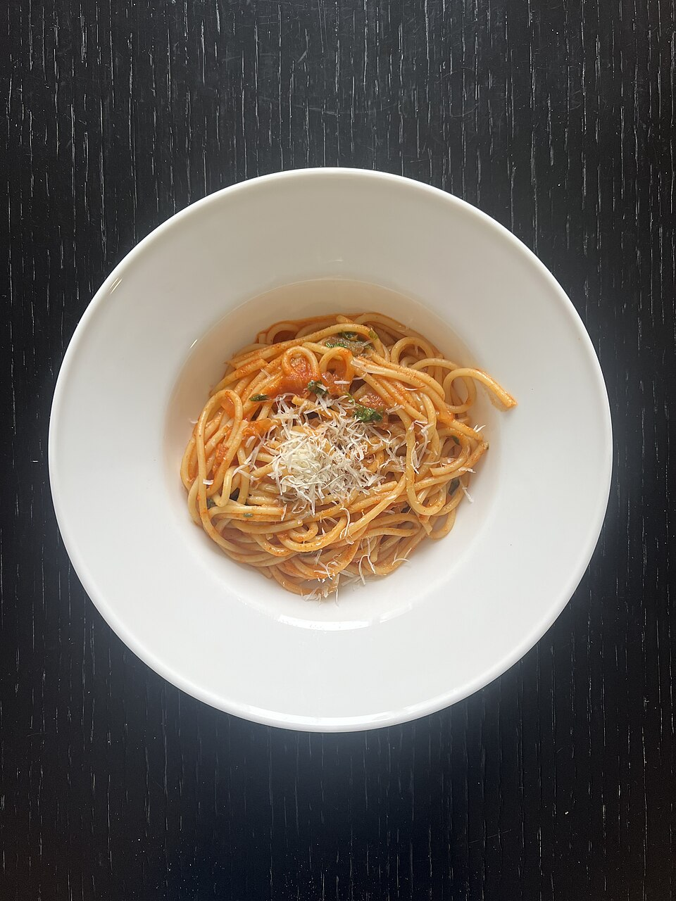

Massas
Macarrão à napolitana

Ingredientes
- 1 colher (sopa) de óleo
- 1 cebola ralada
- 2 dentes de alho esmagados
- 8 tomates maduros, sem pele e sem sementes, picados
- 1 pitada de açúcar
- 1 tablete de caldo de galinha dissolvido em 1 xícara (chá) de água fervente
- 1 folha de louro
- Tomilho e pimenta-do-reino a gosto
- 1 maço de salsa picada
- ½ xícara (chá) de azeitonas pretas picadas
- 3 colheres (sopa) de queijo parmesão ralado
- 500 g de macarrão espaguete
Modo de preparo
- Aqueça o óleo e junte cebola, alho, tomate e açúcar. Acrescente o caldo, o louro, o tomilho e a pimenta.
- Tampe e cozinhe em fogo baixo até o molho engrossar. Junte a salsa e as azeitonas.
- Cozinhe o macarrão al dente em água fervente, escorra e sirva com o molho e o parmesão.
Observação: recorte Maggi (caldos).